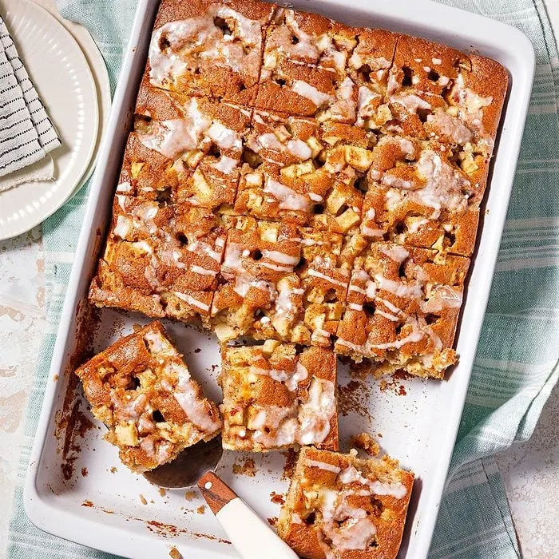

Apple Cake

Apple cakes are cakes in which apples feature as a main flavour and ingredient. These cakes incorporate apples
in a variety of forms, including diced, pureed, or stewed, and can feature common additions like raisins, nuts,
and 'sweet' spices such as cinnamon or nutmeg. They are a common and popular dessert worldwide, thanks to
millennia of apple cultivation in Asia and Europe, and their widespread introduction and propagation throughout
the Americas during the Columbian Exchange and colonisation. As a result, apple desserts, including cakes, have
a huge number of variations.
Ingredients
- baking powder
- baking soda
- salt
- sugar
- spices
- chopped nuts
Steps
-
Peel, core, and dice two to three apples into small chunks, tossing them with cinnamon and optionally sugar
or flour to prevent sinking
-
In a bowl, mix dry ingredients (flour, baking powder, salt, spices) and in another, whisk wet ingredients
-
Gently fold the wet and dry mixtures together until just combined, then fold in the diced apples (and nuts,
if using) without overmixing.
-
Pour the thick batter into the prepared pan, smoothing the top, and bake for 35 to 50 minutes until a
toothpick inserted in the center comes out clean
-
Let the cake cool in the pan for 10–15 minutes before removing, then serve warm with whipped cream, ice
cream, or a brown sugar glaze
Home